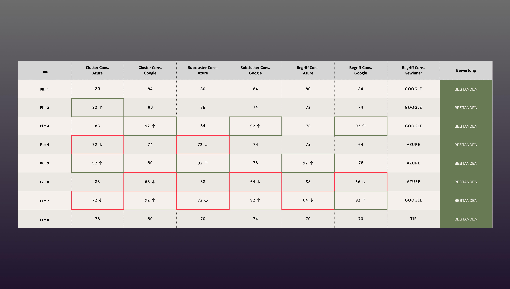

AI toolchain · proof of concept · public broadcasting
ARD Mediathek /
identifying moods and motivations and weighing them with AI
Two AI toolchains, eight videos, eighty runs. And a question we kept coming back to: when the thing you're measuring is subjective, what counts as correct?
The problem
ARD produces more than 2,000 hours of content a day. Every video gets 23 editorial metadata fields, filled in by hand by editorial teams whose main job is, understandably, making programmes. With that volume and no shared definition of a word like quirky, the tagging drifted. Not through carelessness. Nobody had ever been given a common vocabulary to work from.
The knock-on effects were concrete: the recommendation engine had thin data, younger viewers struggled to find things, and partner platforms needed the same information in five other formats.
So the brief was quite specific. Could an AI generate two of the hardest fields, Mood and Consumption Motivation, well enough to take the job off people's desks?
2,000h
of ARD content produced per day
23
editorial metadata fields per video, and growing
2
subjective fields tested: Mood and Consumption Motivation
What made this hard
Mood is subjective. Two people watch the same film, one says melancholic, the other says dramatic, and they're both right. Before we could test anything we needed a vocabulary that could be tested against. So the first weeks went into clusters and sub-clusters, decision trees, and a reference document we called the Mood-Bible for the cases where two terms sat too close together. My colleague had already started this before I joined, and I came in as that phase was wrapping up.
We also had to think about how a language model fails. It adds terms that aren't on the list. It writes a convincing reason for a guess. It answers from what it already knows about a well-known show instead of from the video in front of it. Each of those became a rule in the prompt.
Approach
01
Two toolchains, side by side. One route sent the video through Azure Video Indexer for emotions, transcript, labels and content-moderation signals, then handed that output to Claude to interpret. The other used Google AI Studio with Gemini, which takes video, audio and text in a single pass. My colleague ran Azure with a developer's support. I ran Google on my own, mainly because AI Studio doesn't require you to know much about cloud APIs, and I didn't.
02
The prompt. Four steps. Find candidate moods, score each against the decision tree, rank them, then check your own output for duplicates and mismatches. The Mood-Bible went in as reference. Eight videos, five runs each, on both toolchains.
↑ Snippet from the system prompt
03
Taking the lead, and a Python detour. Once the runs were in, I took the lead on the project. The analysis I shared equally with my senior colleague: together we turned the questions we wanted answered into three measures. Does it pick the same tags each run, does it score them similarly, does it rank them the same way. Eighty runs across two toolchains is more arithmetic than a chat assistant handles reliably, we tried a few and the results kept shifting. So I wrote a script instead, with AI helping me through the parts I didn't know. I'd watched all eight videos and sat on the human panel myself, so I had a rough feel for when a number was wrong. The first versions produced a few of those, and it took a couple of iterations before the numbers matched what I'd seen.
04
The human control group. Eight colleagues tagged the same videos in the same format, four of them per video. We planned to treat their answers as the ground truth.
What we found
Run five times, each toolchain picked moods from the same clusters 68–92% of the time, and scored their intensity almost identically, above 91% on every video. Four people tagging the same video agreed with each other far less: 36–54% at cluster level.
That isn't quite a fair fight, and it's worth saying so. We were comparing a model with itself against people with each other, and we'd written the decision trees and the Mood-Bible for the machine. The humans had a list and their gut. Giving them the same support is the first thing I'd change in a second round.

↑ Mood presence consistency, AI toolchains compared across the eight test videos
Consistency was one of two criteria. The other was quality: did the model land in the same clusters as the human panel? For mood it mostly did, all eight videos on Google and seven of eight on Azure, where the eighth still passed at cluster level. Consumption motivation was harder. Three videos fell short on both toolchains: two where the context around a show mattered more than the footage, and one where the model read practical guidance and the panel read something closer to curiosity.
Four things stood out.
Clusters held
The AI would drift between neighbouring tags but stay inside the cluster, so mapping search and recommendations to clusters would make the drift irrelevant.
Tatort was the hardest
Lowest for the human panel and for Google's toolchain. For a lot of viewers it's a Sunday-evening ritual before it's a crime drama. Once we gave the model that context, its consumption-motivation tags moved from thrill-seeking and opinion-forming to something to talk about afterwards and a sense of comfort.
Format matters
Magazine-style shows with several segments did better with Google's multimodal read than with the transcript-led Azure route. The right toolchain depends on the content.
The rules held, mostly
Across 80 runs neither toolchain invented a tag or a justification. The one slip: Google still leaned on what it already knew about Tatort, despite being told not to.
And one thing that changed the brief: if people disagree with each other more than the model disagrees with itself, "accurate" can't simply mean "matches the people". Someone has to decide what correct looks like first. That became a requirements list for the next phase.
What the client said
After I left, the team interviewed people across three departments at ARD and WDR, plus a couple by email with ARD's programme directorate and ZDF Streaming. Two answers stuck.
"Wann seid ihr fertig? Ich könnte das gebrauchen."
"When will you be done? I could use this." · Interview participant, ARD
"Verschlagwortung sollte 100% autonom laufen, da kann man mit Fehlern umgehen."
"Tagging should run fully autonomously. We can live with the mistakes." · Interview participant, ARD
Outcome
80
AI runs analysed across 2 toolchains
68–92%
cluster consistency across five runs per video
MVP
next phase planned from the findings
The PoC passed. The two toolchains landed close together, each better at a different kind of content, and the findings went into a spec for the next phase. By the time I left, that next phase was being planned as an MVP.